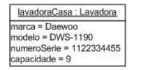

<!doctype html>
<html lang="gl">
<head>
<link rel="stylesheet" type="text/css" href="base.css" />
<link rel="stylesheet" type="text/css" href="exe_effects.css" />
<link rel="stylesheet" type="text/css" href="content.css" />
<link rel="stylesheet" type="text/css" href="nav.css" />
<meta http-equiv="content-type" content="text/html;  charset=utf-8" />
<title>Exemplos de diagramas UML | 1- Introducción POO e UML </title>
<link rel="shortcut icon" href="favicon.ico" type="image/x-icon" />
<meta name="author" content="UXÍA DÍAZ GARCÍA" />
<link rel="license" type="text/html" href="http://creativecommons.org/licenses/by-sa/4.0/" />
<meta name="generator" content="eXeLearning 2.9 Portable - exelearning.net" />
<!--[if lt IE 9]><script type="text/javascript" src="exe_html5.js"></script><![endif]-->
<script type="text/javascript" src="exe_jquery.js"></script>
<script type="text/javascript" src="exe_effects.js"></script>
<script type="text/javascript" src="common_i18n.js"></script>
<script type="text/javascript" src="common.js"></script>
<meta name="viewport" content="width=device-width, initial-scale=1" />
</head>
<body class="exe-web-site" id="exe-node-24"><script type="text/javascript">document.body.className+=" js"</script>
<div id="content">
<p id="skipNav"><a href="#main" class="sr-av">Saltar navegación</a></p>
<header id="header" ><div id="headerContent">1- Introducción POO e UML</div></header>
<nav id="siteNav">
<ul>
   <li><a href="index.html" class="daddy main-node">Introducción a UML e POO</a></li>
   <li><a href="orientacin_a_obxectos.html" class="daddy">Orientación a obxectos</a>
   <ul class="other-section">
      <li><a href="clases_e_obxectos.html" class="no-ch">Clases e obxectos</a></li>
      <li><a href="constructores_e_destructores.html" class="daddy">Constructores e destructores</a>
      <ul class="other-section">
         <li><a href="exemplos_c.html" class="daddy">Exemplos C#</a>
         <ul class="other-section">
            <li><a href="constructor_clase_tempo.html" class="no-ch">Constructor clase tempo</a></li>
            <li><a href="utilizacin_clase_tempo.html" class="no-ch">Utilización clase Tempo</a></li>
         </ul>
         </li>
      </ul>
      </li>
      <li><a href="abstraccin.html" class="daddy">Abstracción</a>
      <ul class="other-section">
         <li><a href="exemplo_c.html" class="no-ch">Exemplo C#</a></li>
      </ul>
      </li>
      <li><a href="encapsulado.html" class="daddy">Encapsulado</a>
      <ul class="other-section">
         <li><a href="exemplo_c0.html" class="no-ch">Exemplo C#</a></li>
      </ul>
      </li>
      <li><a href="herdanza.html" class="no-ch">Herdanza</a></li>
      <li><a href="polimorfismo.html" class="no-ch">Polimorfismo</a></li>
      <li><a href="envo_de_mensaxes.html" class="no-ch">Envío de mensaxes</a></li>
      <li><a href="relacins_entre_obxectos.html" class="no-ch">Relacións entre obxectos</a></li>
   </ul>
   </li>
   <li><a href="mtodos_de_modelaxe.html" class="daddy">Métodos de modelaxe</a>
   <ul class="other-section">
      <li><a href="diagrama_de_fluxo_de_datos.html" class="no-ch">Diagrama de fluxo de datos</a></li>
      <li><a href="diagramas_entidaderelacin.html" class="no-ch">Diagramas entidade-relación</a></li>
      <li><a href="diagramas_hipo.html" class="no-ch">Diagramas HIPO</a></li>
      <li><a href="diagramas_vtoc.html" class="no-ch">Diagramas VTOC</a></li>
      <li><a href="diagramas_warnierorr.html" class="no-ch">Diagramas Warnier-Orr</a></li>
   </ul>
   </li>
   <li class="current-page-parent"><a href="_linguaxe_unificada_de_modelado_uml.html" class="current-page-parent daddy">Á Linguaxe Unificada de Modelado (UML)</a>
   <ul>
      <li class="current-page-parent"><a href="diagramas_do_uml.html" class="current-page-parent daddy">Diagramas do UML</a>
      <ul>
         <li id="active"><a href="exemplos_de_diagramas_uml.html" class="active no-ch">Exemplos de diagramas UML</a></li>
      </ul>
      </li>
   </ul>
   </li>
</ul>
</nav>
<div id='topPagination'>
<nav class="pagination noprt">
<a href="diagramas_do_uml.html" class="prev"><span><span>&laquo; </span>Anterior</span></a>
</nav>
</div>
<div id="main-wrapper">
<section id="main">
<header id="nodeDecoration"><h1 id="nodeTitle">Exemplos de diagramas UML</h1></header>
<article class="iDevice_wrapper textIdevice" id="id30">
<div class="iDevice emphasis0" >
<div id="ta30_143_2" class="block iDevice_content">
<div class="exe-text"><div class="exe-fx exe-tabs">
<h2>Casos de Uso</h2>
<p><span style="font-size: 14pt;">O diagrama de casos de uso permite representar as <strong><span style="background-color: #ffff99;">interaccións entre o sistema</span></strong> e os seus <strong><span style="background-color: #ffff99;">actores</span> </strong>en resposta a un evento que inicia un actor. Un caso de uso proporciona un ou máis escenarios de actuación do sistema dende o punto de vista do cliente. Nos diagramas de casos de uso evítase a utilización de xerga técnica para que o cliente poida interpretalo facilmente.</span></p>
<p></p>
<h2>Diagrama de clases</h2>
<p><span style="font-size: 14pt;">O diagrama de clases representa a estrutura lóxica do sistema, é dicir, as <strong><span style="background-color: #ffff99;">clases</span> </strong>que o forman e as<strong> <span style="background-color: #ffff99;">súas relacións</span></strong>. Por cada clase indícase o seu nome, atributos e métodos.</span></p>
<p></p>
<p></p>
<h2>Diagrama de obxetos</h2>
<p><span style="font-size: 14pt;">Un caso especial de diagrama de clases é o diagrama de obxectos que permite representar <strong><span style="background-color: #ffff99;">unha instancia dunha clase</span></strong>. Por exemplo o diagrama do obxecto lavadoraCasa da clase Lavadora:  </span>   <br /></p>
<p></p>
<h2>Diagrama de estados</h2>
<p><span style="font-size: 14pt;">É un diagrama que mostra as<strong><span style="background-color: #ffff99;"> transicións entre diferentes estados dun obxecto</span></strong>. A transición entre estados é instantánea e correspóndese coa ocorrencia dun evento.</span></p>
<p><span style="font-size: 14pt;">Por exemplo o diagrama de estados dun obxecto da clase Lavadora no proceso de activar lavado podería ser:</span></p>
<p></p>
<h2>Diagrama de secuencias</h2>
<p><span style="font-size: 14pt;">Representa a<strong><span style="background-color: #ffff99;"> interacción entre obxectos ao longo do tempo</span></strong>. Por exemplo, o proceso de lavado de roupa despois de haber completado as operacións “agregar roupa”, ”agregar deterxente” e “activar” podería estar formado polas actividades representadas textualmente como:</span></p>
<ol>
<li><span style="font-size: 14pt;">A auga empeza a encher o Tambor mediante unha mangueira.   <br /></span></li>
<li><span style="font-size: 14pt;">A mangueira deixa de abastecer auga.</span></li>
<li><span style="font-size: 14pt;">O tambor permanece inactivo.</span></li>
<li><span style="font-size: 14pt;">O tambor xira dun lado a outro.</span></li>
<li><span style="font-size: 14pt;">A auga con xabón sae polo drenaxe.</span></li>
<li><span style="font-size: 14pt;">Comeza un novo abastecemento de auga.</span></li>
<li><span style="font-size: 14pt;">O abastecemento de auga detense.</span></li>
<li><span style="font-size: 14pt;">O tambor continúa xirando dun lado a outro.</span></li>
<li><span style="font-size: 14pt;">A auga da enxaugadura sae polo drenaxe.</span></li>
<li><span style="font-size: 14pt;">O tambor xira nunha soa dirección e incrementase a velocidade.</span></li>
<li><span style="font-size: 14pt;">A auga sobrante sae polo drenaxe.</span></li>
<li><span style="font-size: 14pt;">O tambor deixa de xirar e o proceso de lavado finaliza.</span></li>
</ol>
<p><span style="font-size: 14pt;">Enlazando o anterior co diagrama de estados: os pasos 1-3 corresponderían ao estado de Remollo; os pasos 4-5 ao estado de Lavado, os pasos 6-9 ao estado de enxaugadura e os pasos 10-12 ao estado de centrifugado. </span></p>
<p><span style="font-size: 14pt;">E en forma de diagrama de secuencias suporemos a existencia de 3 obxectos das clases<br />Mangueira, Tambor e Drenaxe.</span></p>
<h2><span style="font-size: 14pt;"> Diagrama de actividades</span></h2>
<p><span style="font-size: 14pt;">O diagrama de actividades representa o<span style="background-color: #ffff99;"><strong> fluxo de traballo paso a paso dentro dun caso de uso ou dentro do comportamento dun obxecto</strong></span>. Normalmente este fluxo descríbese cun diagrama de secuencia. <br /></span></p>
<p><span style="font-size: 14pt;"></span></p>
<h2><span style="font-size: 14pt;">Diagrama de colaboracións</span></h2>
<p><span style="font-size: 14pt;">Representa o traballo en conxunto dos elementos dun sistema para cumprir cos obxectivos do mesmo. Por exemplo a existencia dunha nova clase para o cronómetro interno que actúa entre a mangueira de auga e o tambor para controlar o tempo. O diagrama de colaboracións podería ser: </span></p>
<p style="text-align: center;"><span style="font-size: 14pt;"></span></p>
<h2 style="text-align: left;"><span style="font-size: 14pt;">Diagrama de compoñentes</span></h2>
<p style="text-align: left;"><span style="font-size: 14pt;"> O diagrama de compoñentes representa a <span style="background-color: #ffff99;"><strong>subdivisión dun sistema en compoñentes e mostra as dependencias entre eles.</strong></span> Estes compoñentes poden ser arquivos, bases de datos programas, bibliotecas, módulos executables ou paquetes. A relación entre compoñentes represéntase cunha liña descontinua acabada en punta de frecha no destino indicando que o compoñente orixe depende do destino. </span></p>
<p style="text-align: left;"><span style="font-size: 14pt;"></span></p>
<h2 style="text-align: left;"><span style="font-size: 14pt;">Diagrama de despregue</span></h2>
<p style="text-align: left;"><span style="font-size: 14pt;">O diagrama de despregue mostra a <span style="background-color: #ffff99;"><strong>disposición física dos distintos nodos que compoñen o sistema e o reparto de compoñentes sobre eses nodos</strong></span>. </span></p>
<p style="text-align: left;"><span style="font-size: 14pt;">Enlazando o diagrama de despregue co de compoñentes:</span></p>
<ul>
<li style="text-align: left;"><span style="font-size: 14pt;">Os compoñentes son os elementos que participan na execución do sistema. </span></li>
<li style="text-align: left;"><span style="font-size: 14pt;">Os nodos son os elementos onde se executan os compoñentes e pode ser unha linguaxe de programación, un sistema operativo ou un ordenador.</span></li>
</ul>
<p style="text-align: left;"><span style="font-size: 14pt;">O nodo represéntase mediante un cubo co nome do nodo dentro e os nodos ou os compoñentes únense mediante liñas para indicar conexión entre eles. Pódense utilizar estereotipos para precisar o tipo de conexión.</span></p>
<p style="text-align: left;"><span style="font-size: 14pt;"> </span></p>
<h2 style="text-align: left;"><span style="font-size: 14pt;">Paquetes</span></h2>
<p style="text-align: left;"><span style="font-size: 14pt;">Un paquete mostra <span style="background-color: #ffff99;"><strong>agrupacións lóxicas de elementos de modelado. Determina un espazo de nomes e por tanto os nomes dos elementos dun paquete non poden repetirse.</strong> </span></span></p>
<p style="text-align: left;"><span style="font-size: 14pt;">Graficamente represéntase como un rectángulo con pestana na que se coloca o nome do paquete. Dentro do rectángulo colócanse os elementos que forman o paquete. </span></p>
<p style="text-align: left;"><span style="font-size: 14pt;">Un paquete pode ter como contido a outro paquete.</span></p>
<p style="text-align: left;"><span style="font-size: 14pt;">Por exemplo un paquete formado por varias clases podería ser: </span></p>
<p style="text-align: center;"><span style="font-size: 14pt;"></span></p>
</div></div>
</div>
</div>
</article>
<div id="packageLicense" class="cc cc-by-sa">
<p><span>Licenciado baixo a</span> <a rel="license" href="http://creativecommons.org/licenses/by-sa/4.0/">Licenza Creative Commons Atribución Compartir igual 4.0</a></p>
</div>
</section>
</div>
<div id='bottomPagination'>
<nav class="pagination noprt">
<a href="diagramas_do_uml.html" class="prev"><span><span>&laquo; </span>Anterior</span></a>
</nav>
</div>
</div>
<p id="made-with-eXe"><a href="https://exelearning.net/" target="_blank" rel="noopener"><span>Feito con eXeLearning<span> (Nova xanela)</span></span></a></p><script type="text/javascript" src="_intef_js.js"></script></body></html>